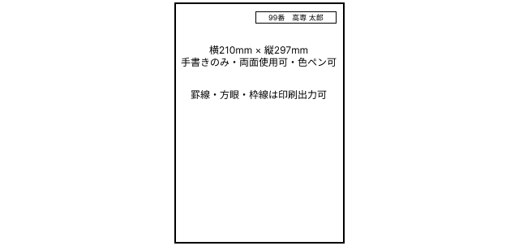
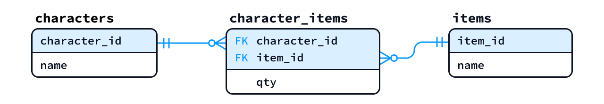
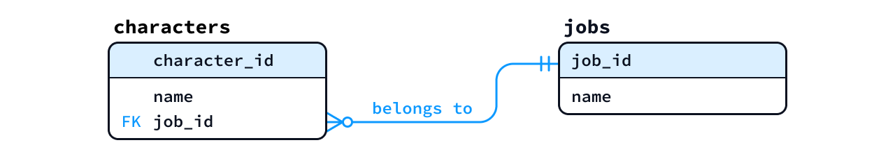
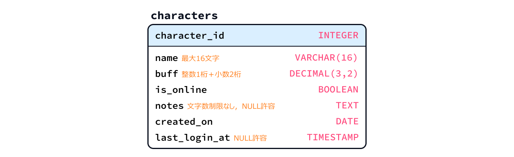

1 連絡と準備
1.1 連絡
- 「小テスト❻」を実施します。
- シラバス記載のように、「小テスト」は最終評価の 35% に相当します。
- 遅刻・欠席等により追試験を希望する場合は 第01回講義で案内した手続き をしてください。
- 課題1 ( 11月19日 (木) 23時 〆切 )
について、再度、状況を確認してください。
- シラバス記載のように「課題」は最終評価の 20% に相当します。
- 参考: 2年 プログラミング1 で作成されたポートフォリオの 作品共有 (学内のみ)
就職活動などに向けて、日頃からポートフォリオを更新・充実させておくことが大切です。
特に、文化祭での展示作品などは、技術力だけでなく、チームで協力して開発した経験を伝える貴重な実績となります。作品の概要に加えて、自身が担当した役割や具体的な貢献（プロダクトマネージャ、プロジェクトマネージャ、テックリード、広報、会計など）も記載することで、自分の強みをより明確に伝えることができます。
- IT系のシステム開発におけるプロダクトマネージャ (PdM)、プロジェクトマネージャ(PM) 、テックリードとはなんですか。情報系の高専4年生向けに解説してください。
- これまでの私との会話から、私の強みや弱み、考え方、行動の傾向を分析し、プロダクトマネージャー（PdM）、プロジェクトマネージャー（PM）、テックリードのうち、どの役割に適性があるかを評価してください。また、それぞれの役割で活かせる強みや、今後伸ばすべき能力についても具体的に説明してください。
- IT系の就活における「ポートフォリオ面接」とは何ですか。選考を通過するための準備のコツなども教えてください。
- IT系の就活における「カルチャーマッチ (カルチャーフィット) 」とは何ですか。
- IT系の就活における「カジュアル面談」とは何ですか。
1.2 後期中間試験について
後期中間試験 (筆記試験) は、11月25日 (水) の1時限目に試験時間 80分 で実施します。
1.2.1 持ち込み品
- ER図の作図も出題予定なので よく消える消しゴム と
直定規 を準備してください (ICOCAなどのカードによる代用は不可です)。
- 定規不使用の作図は減点対象になります。
- A4サイズ1枚の手書きのメモ (両面使用可・色ペンなど使用可)
を持ち込み可とします。持ち込んだメモは、答案とともに提出してもらいます
(採点後に答案とともに返却します)。
- A4よりも大きいサイズ、小さいサイズは持ち込み不可 なので注意してください。
- 片面の 右上部に横10cm、縦1.5cmの四角枠 を作成して、そのなかに
XX番 高専 太郎の形式で出席番号と氏名 (フルネーム) を記入してください。四角枠内には、それ以外の情報を記入しないでください。 - 出席番号と氏名の枠がないメモ、手書き以外で作成したメモ (プリントアウトやコピー) の持ち込みは 不正行為 として扱います。
- ルーズリーフなども、A4サイズのものであれば使用可能です。
- 出席番号と氏名の枠線、罫線や方眼などは印刷でも問題ありません。

持ち込みメモを認めている主な目的は、メモを作成する過程で学習内容を復習・整理し、理解を深めてもらうことにあります。
そのため、生成AIに講義資料をぶち込んで要約させ、その内容を無心で写経するだけでは、十分な学習効果は期待できません。学習内容を自分なりに整理し、本質的に理解できているかを確認しながらメモを作成するようにしてください。
1.2.2 出題内容と範囲
- 第01回講義 から 第07回講義 (今回) の内容を出題範囲としています。
- 本科目は、学修単位科目であり、それ (＝講義1回あたり6時間の学習をしていること) を前提とした「難易度」で試験問題を作成しています。
- 主として「定着確認」と「SQLドリル」から出題します。
- そのままの出題ではなく類題や解答形式を変更した問題となることも想定してください。
- Teams にアップしている昨年度の後期中間試験、学年末試験も参照してください。
- 実施済みの「小テスト」についても、十分に復習しておいてください。特に、どのような問題で、どのような間違いをしたのかを振り返ることが重要です。人間は、思っている以上に同じミスを繰り返すものです。
- 小テストの解答例は Teams で公開済みです。今回の「小テスト❻」の解答例も、近日中にアップします。
- 小テストでは部分点となっていた解答も、試験では誤答 (部分点なし) とすることがあるので注意してください。
1.2.3 SQLの記述について
- 解答は「筆記体」を使用せず、「ブロック体」で丁寧に記述してください。
- 各種引用符は、実際のSQLで記述するように
'と"を使用してください。- 「
‘と’」「“と”」のような開始と終了で形が異なる引用符の使用は「誤答」として扱います。
- 「
- SQLでは、セミコロンは文の終端を示すために使用します。実行環境によってはセミコロンを省略しても実行できますが、試験では、文末にセミコロンのないSQL文は「減点」や「誤答」として扱います。
- 次のような SQLキーワード (予約語) や 型、関数などは全て「大文字」で記述
してください。
INSERT、INTO、VALUES、DELETE、SELECT、FROM、ORDER BY、LIMIT、OFFSET、WHERE、GROUP BY、HAVING、AND、OR、BETWEEN、NOT、AS、CASE、WHEN、THEN、ELSE、END、DISTINCT、ASC、DESCなどSTART TRANSACTION、ROLLBACK、COMMITなどTRUE、FALSEなどLOWER、UPPER、COALESCE、CAST、TO_CHAR、LOCALTIMESTAMP、LOCALTIME、CURRENT_DATEなど
- テーブル名やカラム名は、問題文に示されたものと同じ表記 (大文字・小文字) で記述してください。
1.3 高専ロボコン (全国大会)
優勝おめでとうございます🎉
- 1回戦 v.s. 呉高専
- 2回戦 v.s. 釧路高専
- 準々決勝 v.s. 岐阜高専
- 準決勝 v.s. 鹿児島高専
- 決勝 v.s. 鈴鹿高専
1.4 ハンズオン学習の準備
次の手順で、SQL演習環境を立ち上げ、教材の更新を取得してください。
- SQL演習環境の動作確認 @ 第04回講義
- 教材の更新の取得 @ 第04回講義
1.5 今回の講義内容
前回の講義では、データベース設計の「概念設計」と「論理設計」を取り上げ、IE記法 (Crow’s Foot記法) による概念ER図と論理ER図の読み取りと作図について学びました。また、適切に論理設計を行うことで、結果として、RDBのテーブル構造もある程度「正規化」されたものになることを確認しました。
ただし、適切に論理ER図を作成しただけで、十分に正規化されたテーブル構造になるとは限りません (テーブル内にデータの重複や冗長性が残ってしまうことがあります) 。そこで、今回の講義では、正規化 (Normalization) を取り上げ、テーブル構造に潜む冗長性や問題点を発見し、改善するための考え方と手法を、具体例を交えながら「体系的」かつ「段階的」に学んでいきます。
また、「物理設計」の基礎についても取り上げ、実際に RDB
にテーブルを作成するための SQL
のCREATE TABLE文についても学びます。
正規化 は IPAの各種試験 (基本情報試験や応用情報試験) においても、知識や理解が問われるもの (頻出のテーマ) になります。今回の講義のタイミングで、しっかりと基礎を理解しておくことをお勧めします。
2 正規化 (概要)
データベース設計における 正規化 (Normalization) とは、データの冗長性を減らし、整合性を維持しやすいテーブル構造にするための概念、および、その具体的な作業を意味します。これは、無損失分解 を前提に、1事実1箇所 (1 fact in 1 place) という考え方に基づきテーブルを分解・整理していく作業になります。そして、その結果として得られるテーブル構造を 正規形 (Normal Form) と呼びます。
- 正規化 (Normalization) と 正規形 (Normal Form) という言葉の使い分けに注意してください。
無損失分解 とは、テーブルを複数に分解しても、それらを結合することで、元の情報を完全に復元できるような分解を意味します。
「1事実1箇所」とは、ある事実に関する情報は、原則として1箇所に記録し、複数の場所で重複して管理しないという考え方です。同じ情報をあちこちに記録すると、変更が生じた際にすべての箇所を更新する必要があり、更新漏れによるデータの不整合が発生しやすくなります。
正規形には、いくつかの段階 (レベル) があります。非正規形からはじまり、第1正規形、第2正規形、第3正規形、ボイス・コッド正規形 (第3.5正規形)、第4正規形、第5正規形 へと整理していきます。ただし、実務上は 第3正規形 までで十分とされることが多く、本科目でも「第3正規形」までを扱います。
なお、第1正規形 (First Normal Form) は「1NF」のように略表記されることがあるので覚えておいてください。同様に 2NF、3NF… と表現されます。
整理すると以下のようになります。以降、これらについて、具体例を示しながら詳しく理解を深めていきます。
- 非正規形： 非スカラー値を含むカラムが存在するか、列方向に同種のデータが繰り返されている。
- 第1正規形 (1NF)： 各カラムがスカラー値のみを格納し、列方向の繰り返しが排除されている。
- 第2正規形 (2NF)： 第1正規形の要件を満たし、複合主キーの一部に対する 部分関数従属 が排除されている。
- 第3正規形 (3NF)： 第2正規形の要件を満たし、非キー属性同士の 推移的関数従属 も排除されている。
- RDB 設計に関する質問です。テーブルが「正規形」になっていないと何か困ることがあるのですか。簡単な例を示して教えてください。
- RDB の正規化に関する質問です。実務上、第3正規形までで十分とされることが多い、と聞きました。これはどういうことですか。
2.0.1 定着確認
- RDB
において、データの冗長性を減らし、整合性を維持しやすいテーブル構造に整理するための概念や作業を何というか。次のうち最も適切なものを答えよ。
- 選択肢: 正則化，正規化，正準化，標準化
- 答え: 正規化
- RDB の正規化に関する文脈で「2NF」は何の略語か英語および日本語で答えよ。
- 答え: Second Normal Form (2nd Normal Form)、第2正規形
- RDB
のテーブルは、理論上、非正規形から第5正規形まで段階的に正規化することができる。しかし、一般的な開発現場では通常
( ) までの正規化を行なう。括弧にあてはまる最も適切な語を答えよ。
- 答え: 第3正規形
- RDB
の正規化では、テーブルを分解する際、結合によって元のテーブルを完全に再構成できることが前提となる。この性質は、( )
の原則と呼ばれる。括弧にあてはまる最も適切な語を漢字5文字で答えよ。
- 答え: 無損失分解
- ボイス・コッド正規形は、第 ( ) 正規形と第 ( )
正規形の中間に位置づけられる。括弧にあてはまる数字をそれぞれ答えよ。
- 答え: 3、4
- 🏅 基本情報技術者試験 平成 26 年度秋期 午前 問28
3 非正規形
非スカラー値 (＝複合値、つまり、複数の値を組み合わせたもの) を含むカラムが存在したり、列方向に同種のデータが繰り返されていたりする構造のテーブルは、非正規形 (＝第1正規形 (1NF) を満たしていない状態) とよばれます。
たとえば、次のようなテーブルは、典型的な 非正規形 (Unnormalized Form) となります。テーブル上で、主キーは 下線 で示しています。
▼ 非正規形テーブル1 (スキル管理テーブル)
| character_id | name | job | skill |
|---|---|---|---|
| 1 | Alice | Priest | Heal, Resurrection |
| 2 | Bob | Monk | DragonKick |
| 3 | Charlie | Wizard | Fire, Thunder, Venom |
| 4 | Ellen | Wizard | Thunder |
▼ 非正規形テーブル2 (所持アイテム管理テーブル)
| character_id | name | item1 | qty1 | item2 | qty2 | item3 | qty3 |
|---|---|---|---|---|---|---|---|
| 1 | Alice | Map | 1 | Potion | 5 | ||
| 2 | Bob | Ring | 3 | ||||
| 3 | Charlie | Wand+1 | 1 | Scroll | 4 | Potion | 3 |
| 4 | Ellen |
qty は quantity (数量) の略表記です。
略語としてよく使用されるので覚えておいてください。
非正規形テーブル1 は、skill カラムに非スカラー値 (複合値) を含んでいます。このようなテーブル設計では、個々のスキルを独立したデータとして扱うことが難しくなり、検索や更新が煩雑になります。
たとえば「スキルとして Heal
を使えるキャラクタを検索したい」という単純な問い合わせでも、LIKE述語 を使用した
部分一致検索 (WHERE skill LIKE '%Heal%')
などが必要になります。しかも、この方法では SuperHeal
なども検索結果に含まれる可能性があるため、検索の正確性や処理性能に注意が必要となってきます。
LIKE '%Heal%'のような部分一致検索では、通常のインデックスを利用した効率的な検索が難しく、大量のデータを扱う場合には性能面で問題になることがあります。なお、インデックスについては今後の授業で扱います。
カラムに複合値を入れると検索精度や更新容易性が損なわれる理由
単純な部分一致検索 LIKE '%Heal%' では MegaHeal や
HealBlock のように、名前の一部に Heal
を含むスキルを含むレコードを抽出してしまう可能性があります。
また、スキルの一部だけを更新したい場合 (たとえば Fire, Thunder, Venom に
Quake を追加するような処理)
に、文字列の部分編集や置換操作が必要となります。
また、非正規形テーブル2 では、同じ種類の情報 (アイテムとその数量) が列方向に繰り返されています。これも、第1正規形 (1NF) を満たしていない典型的なパターンとなります。
このようなテーブル設計では「所持可能なアイテムを3種類から4種類に増やしたい」といった仕様変更のたびに 新しいカラムの追加 (＝テーブルスキーマの変更) が必要になるという問題があります。
「レコードの追加」と「カラムの追加」は何が違うのか
RDBにおいて、INSERT による「レコードの追加」や DELETE
による「レコードの削除」は DML操作
に分類され、テーブルの構造を変更せずに実行できます。一方で「カラムの追加・削除」は
ALTER TABLE を用いた DDL操作 に分類され、テーブルの構造そのもの
(＝テーブルスキーマ) を変更する処理となります。
DDL操作は、変更内容によっては処理に非常に長い時間がかかることがあります。また、スキーマを変更すると、既存の SQL が参照しているカラム名やテーブル構造との不整合が生じて、これまでの SQL や アプリが正常に動作しなくなる可能性もあるため、極めて慎重に実行する必要があります。
このため、運用開始後にデータが増加するたびにカラムを追加しなければならないようなテーブル設計は、できるだけ避けることが重要となります。
また、非正規形テーブル2
のようなテーブル構造では、大多数のキャラクタがアイテムを1種類しか所持していない場合、多くのカラムが NULL となり、無駄の多いテーブル構造
になります。さらに、SUM() や COUNT()
を使った集計処理でも、複数のカラムを横断して扱う必要があるため、SQL文が複雑になり、保守性や処理性能の面でも問題が生じやすくなります。
たとえば、非正規形テーブル2 で各キャラクタが所持しているアイテムの総数を求めるには、次のような SQL 文が必要になります。
SELECT
name,
COALESCE(qty1, 0)
+ COALESCE(qty2, 0)
+ COALESCE(qty3, 0) AS "所持アイテム総数"
FROM
characters;ここで、所持可能なアイテムの種類が「32種類」に増えた場合を考えてみてください。集計するカラムも32個に増えるため、SQL文が長く複雑になり、保守が難しくなることが分かると思います。
- RDB に関する質問です。
LIKE '%abc%'のようにワイルドカードを使用した部分一致検索では、通常のインデックスを利用できず、全件走査 (フルスキャン) が必要になる場合があると聞きました。そもそもインデックスとは何ですか。また、なぜ部分一致検索ではインデックスを利用しにくいのですか。 - RDB の設計に関する質問です。「非正規形のテーブル」というのが、いまいち分かりません。典型的な具体例を使って何が問題なのかを丁寧に教えてください。
3.0.1 定着確認
- RDB において、配列やオブジェクトのような ( ① ) を含むカラムが存在したり、( ② )
方向に同種のデータが繰り返されている構造のテーブルを「非正規形」という。括弧にあてはまる最も適切な語を答えよ。
- 答え: ① 「非スカラー値」または「複合値」
- 答え: ② 「列」。「横」でも良いが「列」が望ましい。
- 非正規形テーブル1で、
WHERE skill LIKE '%Heal%'を使用してHealを使えるキャラクタを検索する。skillの値がSuperHealだけの行も検索結果に含まれるか。理由とあわせて答えよ。- 答え: 含まれます。
SuperHealにも文字列Healが含まれているためです。
- 答え: 含まれます。
- 非正規形テーブル2の構造のまま、1人のキャラクタが所持できるアイテムを最大3種類から4種類に増やす。どのカラムを追加する必要があるか。また、各キャラクタの所持アイテム総数を求めるSQL文には、どのような変更が必要か答えよ。
- 答え: 4種類目のアイテム名を記録する
item4と、その数量を記録するqty4が必要です。総数を求めるSQL文では、4種類目を持っていない場合は0として扱えるように、既存の加算式にCOALESCE(qty4, 0)を加えます。
- 答え: 4種類目のアイテム名を記録する
4 第1正規化
第1正規化、つまり、非正規形のテーブルを第1正規形に整えるには、複合値や列方向 (横方向) に繰り返されている情報を 行方向 (縦方向) に展開して保持する ようにします。
具体的には、以下のようにします。
▼ 先ほどの 非正規形テーブル1 (スキル管理テーブル) を第1正規化したテーブル
| character_id | name | job | skill |
|---|---|---|---|
| 1 | Alice | Priest | Heal |
| 1 | Alice | Priest | Resurrection |
| 2 | Bob | Monk | DragonKick |
| 3 | Charlie | Wizard | Fire |
| 3 | Charlie | Wizard | Thunder |
| 3 | Charlie | Wizard | Venom |
| 4 | Ellen | Wizard | Thunder |
これにより、第1正規形の要件である「各カラムにはスカラー値のみを格納し、列方向の繰り返しが排除されている」を満たした構造となりました。
ただし、このままでは character_id だけで 各レコードを一意に識別することができません。そこで、以下に示すように skill_id カラムを追加し、character_id と skill_id を組み合わせた「複合主キー」を設定します。
▼ 非正規形テーブル1 (スキル管理テーブル) を第1正規形にして「複合主キー」を設定したテーブル
| character_id | name | job | skill_id | skill |
|---|---|---|---|---|
| 1 | Alice | Priest | 1 | Heal |
| 1 | Alice | Priest | 2 | Resurrection |
| 2 | Bob | Monk | 3 | DragonKick |
| 3 | Charlie | Wizard | 4 | Fire |
| 3 | Charlie | Wizard | 5 | Thunder |
| 3 | Charlie | Wizard | 6 | Venom |
| 4 | Ellen | Wizard | 5 | Thunder |
同様に、先ほどの 非正規形テーブル2 (所持アイテム管理テーブル) も、キャラクタが所持するアイテムの種類ごとに1行に展開します。各行は character_id と item_id の組み合わせで識別します。次の表の末尾には、アイテムを所持していない Ellen を登録しようとした場合の行も示しています。
| character_id | name | item_id | item | qty |
|---|---|---|---|---|
| 1 | Alice | 1 | Map | 1 |
| 1 | Alice | 2 | Potion | 5 |
| 2 | Bob | 3 | Ring | 3 |
| 3 | Charlie | 4 | Wand+1 | 1 |
| 3 | Charlie | 5 | Scroll | 4 |
| 3 | Charlie | 2 | Potion | 3 |
| 4 | Ellen |
本来、複合主キーを構成するカラムには NULL
を格納することはできません。上記のテーブルで item_id
が空欄になっている Ellen
の行は、実際には登録できない行を説明用に示したものです。
このテーブルの1行は、あるキャラクタが、ある種類のアイテムを何個持っているかを表します。そのため、アイテムを所持していないキャラクタや、誰も所持していないアイテムの情報を、このテーブルだけで管理することはできません。次の「第2正規化」では、キャラクタ、アイテム、所持関係の情報を別々のテーブルに分けて、この問題を解決していきます。
なお、もとのテーブルにはアイテムの種類を記録する欄が3つしかありませんでした。行方向に展開した後は、character_id
と item_id
の複合主キーで同じ組み合わせの重複を防げますが、このテーブル構造だけでは、各キャラクタが所持できるアイテムを最大3種類に制限できません。この上限を維持するには、RDBを利用するアプリケーション側など
で、所持しているアイテムの種類数を確認し、4 種類目の登録を防ぐ仕組みが必要になります。
中級者向け：所持できるアイテムの種類数の制限について
所持できるアイテムの種類数は、データベース側で制御することも可能です。たとえば、PostgreSQL
では トリガー (Trigger)
という仕組みを利用して、INSERT
などの実行時に条件を確認し、制約に違反するデータの登録を防ぐことができます。
4.0.1 定着確認
- RDB の運用において、レコードの追加は DML操作 であるが、カラムの追加は DDL操作
であり、既存テーブルの構造変更をともうなうため、その影響はシステム全体に及ぶ可能性がある。この説明は「適切である」か「適切ではない」か答えよ。
- 答え : 適切である
- 次に示す非正規形のテーブルを第1正規形に変換せよ。変換後のテーブルでは、各レコードが一意に識別できるように複合主キーを設定すること（必要に応じて新たなカラムを追加してよい）。
- 主キーを構成するカラムのヘッダ行には下線をつけること。
- 著者の並び順（author1、author2、author3
の順序情報）も保持すること。必要に応じて新たなカラムを追加してよい。
- 答え : こちら
| book_id | title | author1 | author2 | author3 |
|---|---|---|---|---|
| 1 | New Python | Alice | Ellen | |
| 2 | React 1 | Bob | ||
| 3 | React 2 | Bob | Alice | Charlie |
| 4 | PostgreSQL | Charlie | Ellen |
- 🏅 応用情報技術者試験 平成 30 年度秋期 午前 問28
5 第2正規化
第1正規形の要件を満たし、複合主キーの一部に対する 部分関数従属 が排除 された構造を 第2正規形 といいます。
まずは、第2正規化を理解するうえで重要となる 関数従属 という概念について解説し、その後、第2正規化の具体的な方法を説明します。なお、「関数従属」は資格試験などでも頻出する重要な用語なので、しっかりと理解しておいてください。
5.1 関数従属
関数従属 (FD: Functional Dependency) とは…
ある属性集合 \(\mathrm{X}\) の値が決まると、別の属性集合 \(\mathrm{Y}\) の値も一意に定まる
…という「属性間の関係を表す概念」になります。このような関係が成立するとき、「\(\mathrm{Y}\) は \(\mathrm{X}\) に関数従属する」といい、記号では「 \(\mathrm{X}\rightarrow\mathrm{Y}\) 」のように表現します。
たとえば、\(\mathrm{X}=\{x_1,\ x_2\}\)、\(\mathrm{Y}=\{y_1,\ y_2,\ y_3\}\) の場合は、次のように表現します。
\[ \{x_1,\ x_2\}\rightarrow\{y_1,\ y_2,\ y_3\} \]
RDB のテーブル設計では、「あるカラム集合 \(\mathrm{X}\) の値」が決まると「別のカラム集合 \(\mathrm{Y}\) の値」も一意に決まる関係 を「\(\mathrm{Y}\) は \(\mathrm{X}\) に関数従属する」といいます。
- 具体的には、同じ \(\mathrm{X}\) の値を持つレコードが複数存在する場合、それらのレコードでは \(\mathrm{Y}\) の値も必ず同じになる ということです。このような関係を「\(\mathrm{Y}\) は \(\mathrm{X}\) に関数従属する」といい、単に「\(\mathrm{Y}\) は \(\mathrm{X}\) に従属する」という場合もあります。
- あとで詳しく解説しますが、関数従属には「部分関数従属」や「推移的関数従属」といった概念もあります。
5.1.1 具体例で関数従属を理解する
たとえば、キャラクタの情報を管理する次のテーブルを考えます。各キャラクタには固有の character_id を割り当て、1キャラクタにつき1行を登録します。また、同じ職業ID (job_id) には、常に同じ職業名 (job) が対応するものとします。
| character_id | name | job_id | job | level | guild |
|---|---|---|---|---|---|
| 1 | Alice | J5 | Priest | 42 | Yamato |
| 2 | Bob | J2 | Monk | 33 | hameln |
| 3 | Charlie | J6 | Wizard | 57 | |
| 4 | Ellen | J6 | Wizard | 51 |
このとき、次のような 関数従属 が成立します。
- character_id
が決まれば、name、job_id、job、level、guild
の値も一意に決まるので…
- name, job_id, job, level, guild は、character_id に 関数従属 する
- \(\{\mathrm{character\_id}\} \rightarrow \{\mathrm{name},\ \mathrm{job\_id},\ \mathrm{job},\ \mathrm{level},\ \mathrm{guild}\}\)
- job_id が決まれば、job の値も一意に決まるので…
- job は、job_id に 関数従属 する
- \(\{\mathrm{job\_id}\} \rightarrow \{\mathrm{job}\}\)
なお、テーブルに格納されている現時点のレコードだけに着目すると…
character_id、name、job_id、job、guild は、level に関数従属する
…と判断できそうですが、これは誤りです。
なぜなら、現在のテーブルでは level の値がすべて異なっており、たまたま level の値から各レコードを一意に特定できているだけだからです。
正規化における関数従属とは、すべての有効なデータ状態において常に成立する制約 を意味します。そのため「現時点のデータでは、たまたま成立しているだけの関係」は、関数従属とは見なしません。
このように、関数従属の判断には、現時点のデータだけでなく、ビジネスルールやドメイン知識（対象とする業務や世界に関する知識）に基づく分析 が必要となります。
RDB のテーブル設計では、基本的に 「主キー以外のすべてのカラム」が「主キー」に関数従属 するように設計します。
ただし、主キーに関数従属しているだけでは、第2正規形の要件を満たすとは限りません。特に、主キーが複数のカラムから構成される「複合主キー」の場合、その一部のカラムだけで値が決まる「部分関数従属」が存在する可能性があります。
たとえば、「学生ID」と「科目ID」の組み合わせを「複合主キー」とするテーブルにおいて、「学生名」が「学生ID」だけで一意に決まる場合がこれに該当します。このように、複合主キーの一部だけで、主キー以外のカラムの値が決まる関係を「部分関数従属」といいます。
そこで、「第2正規化」では、複合主キーの一部に対する 部分関数従属 を排除し、主キー以外のすべてのカラムが、主キー全体に 完全関数従属 する構造を目指します。
- RDBにおいて、関数従属であるかは、レコードのサンプルで判断するだけではなく、ドメイン知識に基づいて判断するべきであると説明されました。そもそも「ドメイン知識」とはなんですか。
5.1.2 定着確認
RDB において、id が決まれば name、age、address が一意に決まるとき、その関係を適切に表現しているのは「name, age, address は id に関数従属する」と「id は name, age, address に関数従属する」のどちらか。「前者」または「後者」で答えよ。
- 答え : 前者
RDB において、id が決まれば name、age、address が一意に決まるとき、この関係を関数従属を示す記号で表せ。
- 答え : \(\{\) id \(\} \rightarrow \{\) name, age, address \(\}\)
関数従属は「データの偶然の並び」によって判断するのではなく、属性間の意味的な結びつき (制約) として常に成り立つ関係として考えるべきである。この説明は「適切である」か「適切ではない」か答えよ。
- 答え : 適切である
「\(\mathrm{Y}\) は \(\mathrm{X}\) に関数従属する」とき、同じ \(\mathrm{X}\) の値を持つレコードが複数あってもよいか。「\(\mathrm{Y}\) の値が一意に決まる」とは何を意味するかを踏まえて答えよ。
- 答え : 複数あってもよい。「\(\mathrm{Y}\) の値が一意に決まる」とは、同じ \(\mathrm{X}\) の値を持つレコードでは、\(\mathrm{Y}\) の値がすべて同じになるという意味です。
🏅 基本情報技術者試験 平成 28 年度秋期 午前 問27
🏅 データベーススペシャリスト試験 平成 25 年度春期 午前Ⅱ 問2
5.2 「部分関数従属」と「完全関数従属」
RDB において、テーブルの主キーが複数のカラムから構成される場合（つまり、複合主キーである場合）、主キーを構成するカラムの「一部だけに関数従属するカラム」が存在することがあります。
たとえば、次のようなテーブルがあるとします。
| character_id | name | item_id | item | qty |
|---|---|---|---|---|
| 1 | Alice | 1 | Map | 1 |
| 1 | Alice | 2 | Potion | 5 |
| 2 | Bob | 3 | Ring | 3 |
| 3 | Charlie | 4 | Wand+1 | 1 |
| 3 | Charlie | 5 | Scroll | 4 |
| 3 | Charlie | 2 | Potion | 3 |
| 4 | Ellen |
このテーブルでは、character_id と item_id の組み合わせが複合主キーとなっています。しかし、次のように 複合主キーの「一部だけ」で値が決まるカラム が存在しています。
- item カラムは、item_id だけ に関数従属しています。
- item_id の値だけで item の値が一意に決まり、character_id の値には依存しません。
- name カラムは、character_id だけ に関数従属しています。
- character_id の値だけで name の値が一意に決まり、item_id の値には依存しません。
このように、複合主キーの一部だけに関数従属する関係 を 部分関数従属（PFD: Partial Functional Dependency）といいます。一方、複合主キーを構成するすべてのカラムがそろって、はじめて値が一意に決まる関係を 完全関数従属（FFD: Full Functional Dependency）といいます。
たとえば、上記のテーブルにおいて、qty カラムの値は、character_id と item_id の両方がそろわなければ一意に決まりません。これは、同じアイテムであっても、キャラクタによって所持数が異なる可能性があるためです。
このような関係を「qty は character_id と item_id の組み合わせに完全関数従属する」といいます。
中級者向け
「第2正規形」の厳密な判定では、主キーだけでなく「候補キー」も考慮する必要があります。そのため、サロゲートキーを単独の主キーとして設定していても、別に複数カラムからなる候補キーが存在する場合には、部分関数従属が残っている可能性があります。
5.2.1 定着確認
- 「\(\mathrm{Y}\) は \(\mathrm{X}\)
に関数従属する」という説明だけで、部分関数従属か完全関数従属かを「判断できる」か「判断できない」かを答えよ。
- 答え: 判断できない。部分関数従属も完全関数従属も、どちらも関数従属に含まれます。どちらにあたるかは、\(\mathrm{X}\) の一部だけで \(\mathrm{Y}\) の値が決まるかどうかで判断する必要があります。
次のテーブルは、book_id と author_id により、複合主キーが設定されている。以下の各問いに答えよ。
| book_id | author_id | title | author | author_order |
|---|---|---|---|---|
| 1 | 1 | New Python | Alice | 1 |
| 1 | 2 | New Python | Ellen | 2 |
| 2 | 3 | The React 1 | Bob | 1 |
| 3 | 3 | The React 2 | Bob | 1 |
| 3 | 1 | The React 2 | Alice | 2 |
| 3 | 4 | The React 2 | Charlie | 3 |
| 4 | 4 | PostgreSQL | Charlie | 1 |
| 4 | 2 | PostgreSQL | Ellen | 2 |
- このテーブルは、第1正規形としての要件を「満たしている」か「満たしていない」かを答えよ。
- 答え: 満たしている
- title
カラムは、この複合主キーに対して「部分関数従属」しているか、「完全関数従属」しているかを答えよ。
- 答え: 部分関数従属
- author
カラムは、この複合主キーに対して「部分関数従属」しているか、「完全関数従属」しているかを答えよ。
- 答え: 部分関数従属
- author_order
カラムは、この複合主キーに対して「部分関数従属」しているか、「完全関数従属」しているかを答えよ。
- 答え: 完全関数従属
- このテーブルは、第2正規形としての要件を「満たしている」か「満たしていない」かを答えよ。
- 答え: 部分関数従属を含むため、満たしていない。
5.3 第2正規形
第2正規化 では、第1正規形の要件を満たしたうえで、複合主キーの一部に対する部分関数従属を排除し、主キー以外のカラムが主キー全体に 完全関数従属 するようにテーブルを分解していきます。
たとえば、次のような部分関数従属を含むテーブルがあるとします。
▼ 第1正規形（第2正規形ではない）
| character_id | name | item_id | item | qty |
|---|---|---|---|---|
| 1 | Alice | 1 | Map | 1 |
| 1 | Alice | 2 | Potion | 5 |
| 2 | Bob | 3 | Ring | 3 |
| 3 | Charlie | 4 | Wand+1 | 1 |
| 3 | Charlie | 5 | Scroll | 4 |
| 3 | Charlie | 2 | Potion | 3 |
| 4 | Ellen |
このテーブルに存在する 部分関数従属を排除し、第2正規形の要件を満たすように分解すると、次の3つのテーブルになります。なお、一部のカラム名は分解後の構造にあわせて変更しています。
▼ characters テーブル (第2正規形)
| character_id | name |
|---|---|
| 1 | Alice |
| 2 | Bob |
| 3 | Charlie |
| 4 | Ellen |
▼ items テーブル (第2正規形)
| item_id | name |
|---|---|
| 1 | Map |
| 2 | Potion |
| 3 | Ring |
| 4 | Wand+1 |
| 5 | Scroll |
▼ character_items テーブル (第2正規形・複合主キー・完全関数従属)
| character_id (FK) |
item_id (FK) |
qty |
|---|---|---|
| 1 | 1 | 1 |
| 1 | 2 | 5 |
| 2 | 3 | 3 |
| 3 | 4 | 1 |
| 3 | 5 | 4 |
| 3 | 2 | 3 |
- FK は、外部キー (＝他のテーブルの主キーを参照するカラム) であることを表しています。
分解後の characters テーブルと items テーブルでは、それぞれの主キーによって name が一意に決まる構造になっています。また、character_items テーブルでは、qty が character_id と item_id の組み合わせに「完全関数従属」しています。
これにより、すべての部分関数従属が解消され、3つのテーブルはいずれも「第2正規形」の要件を満たしているといえます。
ここで注目したいのは、この分解結果が、前回講義で学んだ 多対多のリレーションの分割（中間テーブル化） と同じ構造になっていることです。
これは、「多対多」の関係を中間テーブルで適切に表現することが、部分関数従属の解消にもつながるためです。このように、論理ER図を適切に設計していれば、結果として自然に「第2正規形」の要件を満たすようなテーブル構造になっていることも少なくありません。

このようなこともあるので、DB設計では、いきなりテーブルを作成するのではなく、事前に「論理ER図」を描いて、データの構造や関係を整理しておくことが重要です。そうすることで、後から正規化のためにテーブルを分解・修正する手間も減らすことができます。
5.3.1 定着確認
- RDB において第2正規形とは、第1正規形の要件を満たしつつ、複合主キーの一部に対する ( )
が排除されている構造を指す。括弧にあてはまる最も適切な語を答えよ。
- 答え : 部分関数従属
- RDB において第2正規形とは、第1正規形の要件を満たしつつ、非キー属性が複合主キー全体に対して
( ) している状態を指す。括弧にあてはまる最も適切な語を答えよ。
- 答え : 完全関数従属
- 次に示す第1正規形のテーブルを、第2正規形の要件を満たす複数のテーブルに分解せよ。分解後の各テーブルには、適切なテーブル名を付け、必要に応じてカラム名も整理すること。また、各テーブルには主キー
(必要に応じてサロゲートキーを含む) を設定すること。
- 主キーを構成するカラムのヘッダ行には下線をつけること。
- 答え: こちら
| book_id | author_id | title | author | author_order |
|---|---|---|---|---|
| 1 | 1 | New Python | Alice | 1 |
| 1 | 2 | New Python | Ellen | 2 |
| 2 | 3 | The React 1 | Bob | 1 |
| 3 | 3 | The React 2 | Bob | 1 |
| 3 | 1 | The React 2 | Alice | 2 |
| 3 | 4 | The React 2 | Charlie | 3 |
| 4 | 4 | PostgreSQL | Charlie | 1 |
| 4 | 2 | PostgreSQL | Ellen | 2 |
上記で第2正規形に分解して得られたテーブル群について、それらの構造と関連を示す「論理ER図」を作成せよ。なお、1冊の書籍には必ず1名以上の著者が存在し、一方で著者は書籍を持たない場合があるものとしてオプショナリティを適切に設定すること。
- 答え: 作成例
🏅 応用情報技術者試験 令和 3 年度秋期 午前 問28
🏅 応用情報技術者試験 平成 26 年度春期 午前 問27
🏅 応用情報技術者試験 平成 29 年度春期 午前 問27

6 第3正規化
第3正規化 では、第2正規形の要件を満たしつつ、非キー属性を経由する「推移的関数従属」というものを排除していきます。非キー属性とは 主キーを構成しないカラム、つまり「主キー以外のカラム」 を指します。
6.1 推移的関数従属
推移的関数従属 (TFD: Transitive Functional Dependency) とは、主キーから別のカラムを経由して、さらに別のカラムの値が決まる関係 を指します。
具体的には、\(\{\) 主キー \(\} \rightarrow \{\) 非キーA \(\} \rightarrow \{\) 非キーB \(\}\) という依存の連鎖がある場合「非キー B は、主キーに推移的に関数従属している」と表現します。
簡単にいえば、「A が決まれば B が決まり、B が決まれば C も決まる」という芋づる式の関係を指します。「主キー」から直接考えるのではなく、途中のカラムをたどることで、別のカラムの値まで決まってしまうような関係を「推移的関数従属」といいます。
たとえば、次のようなテーブルを考えます。このテーブルの「主キー」は、下線 で示した character_id であり、「非キー属性」は name、job_id、job_name となります。このテーブルは、次の理由から「第2正規形」までの要件を満たしています。
- 各カラムには「スカラー値」が格納され、列方向の繰り返しもないため、第1正規形 の要件を満たしています。
- 主キーは単一のカラムで構成されており、その一部に対する「部分関数従属」は存在しないため、第2正規形 の要件も満たしています。
| character_id | name | job_id | job_name |
|---|---|---|---|
| 1 | Alice | J5 | Priest |
| 2 | Bob | J2 | Monk |
| 3 | Charlie | J6 | Wizard |
| 4 | Ellen | J6 | Wizard |
このテーブルにおいて、「推移的関数従属」の観点から注目すべき点は、次の 2 つです。
- 主キーである character_id が決まれば、job_id の値が一意に決まる。
- 非キー属性である job_id が決まれば、job_name の値も一意に決まる。
つまり、\(\{\) character_id \(\} \rightarrow \{\) job_id \(\} \rightarrow \{\) job_name \(\}\) という依存関係が成立しています。
この関係では、主キーである character_id から job_name の値も一意に決まりますが、job_name は、主キー以外の job_id によっても一意に決まる という点が重要です。
このように、主キーから非キー属性を経由して別の非キー属性が決まる関係を「job_name は、主キーに推移的に関数従属している」といいます。
そして、このような 「推移的関数従属」を排除するようにテーブルを分解する操作 が「第3正規化」となります。
6.2 第3正規形
次のような推移的関数従属を含むテーブル (＝具体的には \(\{\) character_id \(\} \rightarrow \{\) job_id \(\} \rightarrow \{\) job_name \(\}\) ) があるとします。
| character_id | name | job_id | job_name |
|---|---|---|---|
| 1 | Alice | J5 | Priest |
| 2 | Bob | J2 | Monk |
| 3 | Charlie | J6 | Wizard |
| 4 | Ellen | J6 | Wizard |
このテーブルは「推移的関数従属」を解消することで、次の2つのテーブル (characters と jobs) に分解できます。これにより、両方のテーブルが「第3正規形」の要件を満たす構造になります。
▼ characters テーブル (第3正規形)
| character_id | name | job_id (FK) |
|---|---|---|
| 1 | Alice | J5 |
| 2 | Bob | J2 |
| 3 | Charlie | J6 |
| 4 | Ellen | J6 |
▼ jobs テーブル (第3正規形)
| job_id | name |
|---|---|
| J1 | Fighter |
| J2 | Monk |
| J3 | Ninja |
| J4 | Samurai |
| J5 | Priest |
| J6 | Wizard |
分解前のテーブルにあった Monk、Priest、Wizard
に加え、分解後に、どのキャラクタも就いていない
Fighter、Ninja、Samurai を登録した例です。
これらのテーブルをもとに論理ER図を作成すると、次のようになります。なお、characters テーブルの job_id には、NOT NULL 制約 を設定することを想定しています。

ここで注目したいのは、第3正規化によって、どのキャラクタも就いていないジョブ
(具体的には Fighter、Ninja、Samurai など)
の情報も、独立して保持できるようになったことです。
分解前のテーブルでは、そのジョブに就いているキャラクタが存在しない場合、ジョブの情報だけを登録することができませんでした。一方、分解後は jobs テーブルでジョブ情報を独立して管理できるため、キャラクタの有無にかかわらず、すべてのジョブを登録・保持できるようになりました。
6.2.1 定着確認
- 主キーの値が決まると、ある非キー属性の値が決まり、さらにその値から別の非キー属性の値が決まる。このように、非キー属性が別の非キー属性を経由して主キーに従属する関係を何というか答えよ。
- 答え : 推移的関数従属
- 次に示すテーブルに内在している「推移的関数従属」を、関数従属を示す記号により表せ。なお、同じ主著者名には常に同じ電話番号が対応し、同じ出版社名には常に同じ電話番号が対応するものとする。
- 答え: \(\{\) book_id \(\} \rightarrow \{\) primary_author \(\} \rightarrow \{\) primary_author_tel \(\}\)
- 答え: \(\{\) book_id \(\} \rightarrow \{\) publisher \(\} \rightarrow \{\) publisher_tel \(\}\)
| book_id | title | primary_author | primary_author_tel | publisher | publisher_tel |
|---|---|---|---|---|---|
| 1 | New Python | Alice | 5501 | Hoge Inc. | 4771 |
| 2 | React 1 | Bob | 3000 | Fuga Inc. | 4649 |
| 3 | React 2 | Bob | 3000 | Fuga Inc. | 4649 |
| 4 | PostgreSQL | Charlie | 5432 | Hoge Inc. | 4771 |
| 5 | Hello COBOL | Ellen | 8080 | Piyo Inc. | 2951 |
| 6 | OpenCV ! | Alice | 5501 | Piyo Inc. | 2951 |
上記に示したテーブルを、第3正規形としての要件を満たす複数のテーブルに分解せよ。
- 分解後の各テーブルには、内容に応じた適切な名前を付けて、カラム名も整理すること。
- 各テーブルには主キー (必要に応じてサロゲートキーを含む) を設定し、主キーとなるカラムの見出しには下線を付けて示すこと。
- 外部キーのカラムには、カラムの見出しに
(FK)を付けて示すこと。 - 答え: こちら
上記で第3正規形に分解して得られたテーブル群について、それらの構造と関連を示す「論理ER図」を作成せよ。なお、リレーションには、books エンティティ (テーブル) を基準とした関連名 (動詞句) を記載すること。
- 各書籍には、主著者と出版社がそれぞれ1つずつ対応する。
- 各著者は少なくとも1冊の書籍の主著者である。出版社には、書籍が1冊も登録されていない場合がある。
- 答え: 作成例
🏅 応用情報技術者試験 平成 28 年度春期 午前 問27
🏅 応用情報技術者試験 平成 29 年度秋期 午前 問27
🏅 応用情報技術者試験 令和 7 年度春期 午前 問26
🏅 データベーススペシャリスト試験 令和 2 年度秋期 午前Ⅱ 問5

6.3 高次正規化
ここまで、第1正規形、第2正規形、第3正規形について順に解説してきました。先にも触れたように、さらに高度な正規形として、ボイス・コッド正規形 (第3.5正規形)、第4正規形、第5正規形などがあります。ただし、実務では第3正規形までを基本とすることが多く、資格試験でも特に重要となるため、本講義では「第3正規形」までの解説に留めています。
正規化についてさらに深く学びたい学生は、📖 参考書『達人に学ぶDB設計 徹底指南書 (第2版)』で詳しく解説されているので、ぜひ読んでみてください。
- 第3章「論理設計と正規化」
- 3-7 ボイス・コッド正規形 (pp.124–130)
- 3-8 第4正規形 (pp.131–135)
- 3-9 第5正規形 (pp.136–144)
6.4 論理設計と正規化のまとめ
ここまで解説してきたのは、主に「形式的に正しいテーブル構造を設計する」という観点からの論理設計でした。しかし、実際の開発では、「アプリケーションからデータベースをどのように利用するか」という観点も重要であり、そのための設計テクニックや、避けるべきアンチパターンも数多く存在します。
これらはビジネスルールやドメイン知識にも強く依存するため、本講義では詳しく扱いませんが、Zenn、Qiita、書籍、動画などを通じて実践的な知識を学ぶことで、より実務に即したデータベース設計の感覚を身につけることができます。
次の動画では、初心者が陥りがちなデータベース設計の「アンチパターン」がクイズ形式で解説されています。ここまでに学んだ知識で十分に理解できる内容で、短時間で視聴できるので、ぜひ見てみてください。
- 【初心者向け】クソデータベース設計をしないためのテクニック4選 @ YouTube (7:51)
- 【初心者向け】クソデータベース設計をしないためのテクニック5選 @ YouTube (6:56)
また、現場で遭遇する「論理設計のアンチパターン」については、📖 参考書「達人に学ぶDB設計 徹底指南書 (第2版)」で解説されているので、興味のある学生は読んでみてください。上記の動画と同様に、ここまでの授業内容が理解できていれば、概ね内容を理解することができると思います。
- 第7章「論理設計のアンチパターン」pp.225-262
- 第8章「論理設計のグレーノウハウ」pp.263-302
7 物理設計 (基礎)
これまでの論理設計では、テーブルの構成やテーブル間の関係 を設計してきました。これに対して、物理設計 (Physical Design) では、PostgreSQL や MySQL などの具体的な RDBMS を前提に、論理設計で決めた構造を実装するための具体的な仕様 について決定していきます。
具体的には、データ型の選定、主キー／外部キー／CHECK
制約などの設定、CREATE TABLE 文などの DDL による
テーブル定義、検索性能を高めるための
インデックス設計といったことが物理設計の内容となります。
さらに、データベースを安定的かつ効率的に運用するためには、ストレージやメモリなどのハードウェア構成、RAID による冗長化、バックアップ、レプリケーション、負荷分散なども検討する必要があります。これらも物理設計の範疇であり、インフラ設計や運用設計とも密接に関係するものとなります。
ここからは、論理設計で決定したテーブル構造をもとに、PostgreSQL 18 を使って実際にテーブルを作成していきます。特に、各カラムの「データ型」「主キー」「非NULL制約」 の指定方法について詳しく取り上げていきます。
- データベースの「レプリケーション」は、どのような目的で利用される仕組みですか。「バックアップ」との違いも含めて説明してください。
- コンピュータストレージの文脈において「RAID」とは何ですか。2年前の「情報2」の授業で習ったのですが完全に内容を忘れてしまいました。
7.0.1 定着確認
- RDBの設計において、テーブル間の関係や主キー、外部キーを決定した後、使用する RDBMS
の仕様に合わせて、各カラムのデータ型や制約の定義方法、インデックスの構成などを具体化する設計段階を何とよぶか。「概念設計」「論理設計」「物理設計」から選んで答えよ。
- 答え：物理設計
- 次のうち、データベースの「物理設計」で行なう作業として、最も適切でないものを1つ選び、番号で答えよ。
- 検索処理を効率化するために、インデックスを設計する。
- 対象の RDBMS に合わせて、各カラムのデータ型を決定する。
- 業務で扱う情報を分析し、必要なエンティティを抽出する。
- データの整合性を確保するために、制約を具体的に定義する。
- 答え：3
- データベース (RDB)
の物理設計に含まれる作業として適切なものをすべて選び番号で答えよ。
- テーブルごとのデータ型・制約の設計
- ユースケース図の作成
- 正規化による関係の整理
- エンティティやリレーションの抽出
CREATE TABLEなどの DDL 記述- CPU・メモリ搭載量を前提にした性能設計
- 答え：1、5、6
7.1 第07回の演習用スキーマ
今回の演習では、これまで使用してきたデータベース playground 内に、第07回以降の SQL 演習で使用する w07 という新しいスキーマを作成します。
スキーマが異なっていれば、テーブル名が同じでも別々のテーブルとして扱われます。例えば、w07.characters
と w03.characters は、それぞれ独立したテーブルとなります。
なお、第03回講義で解説したように、RDB において 「スキーマ」という用語は異なる 2 つの意味がある ので注意してください。
w07 スキーマを作成するために from-teacher/07/setup.sql を実行してください。このファイルには、以下のような SQL 文が記述されています。
次のコマンドもしくは [Ctrl]+[Shift]+[B]
のショートカットから実行することができます (あらかじめ Docker Desktop
を起動し、npm run db:up を実行しておく必要があります)。
npm run sql from-teacher/07/setup.sql実行後、SHOW search_path; の結果が w07
となることを確認してください。なお、IF NOT EXISTS
は、指定したスキーマが存在しない場合にのみ作成するための指定となります。既に
w07
が存在する場合は、新たに作成せず、既存のスキーマをそのまま使用します。
7.1.1 定着確認
- あるデータベース接続において、テーブル
w07.charactersをスキーマ名を省略したcharactersという名前で参照したい。このために実行すべき SQL 文を答えよ。- 答え：
SET search_path TO w07;
- 答え：
7.2 テーブルの定義
RDBMS において新規に「テーブル」を作成するためには
CREATE TABLE 文を使用します。今回の例では、❶テーブル名
(慣例として複数形の名詞もしくは集合名詞)、❷カラム名、❸データ型、❹主キーの指定といった基本要素を記述します。
たとえば、次のようなエンティティは…

次のような SQL 文で「テーブル」を定義および作成することができます。sql/07/tmp.sql に、この SQL 文を記述し、実際に実行してみてください。
SET
search_path TO w07;
-- 既に存在するなら削除
DROP TABLE IF EXISTS w07.characters;
-- テーブルの作成
CREATE TABLE characters (
character_id INTEGER PRIMARY KEY, -- 整数型、PK
name VARCHAR(16) NOT NULL, -- 可変長文字列(最大16文字)
buff NUMERIC(3, 2) NOT NULL, -- 固定小数点数型 (-9.99〜9.99)
is_online BOOLEAN NOT NULL, -- 真偽値
notes TEXT, -- 可変長文字列
created_on DATE NOT NULL, -- 日付型
last_login_at TIMESTAMP -- 日時型(タイムゾーンなし)
);
-- レコードの挿入
INSERT INTO
characters (character_id, name, buff, is_online, notes, created_on, last_login_at)
VALUES
(
6,
'Alice',
0.00,
TRUE,
NULL,
DATE '2021-06-14',
TIMESTAMP '2025-09-18 14:22:00'
),
(
8,
'Bob',
9.99,
FALSE,
'Admin note: Detected abnormal behavior; monitoring enabled.',
DATE '2022-03-22',
TIMESTAMP '2025-08-03 09:11:00'
);
-- レコードの確認
SELECT
*
FROM
characters
ORDER BY
character_id;次のような実行結果が得られるはずです (表示例では、Bob の notes を
Admin... と省略しています)。最初の SET
はスキーマの検索パスの設定、INSERT 0 2
は2件のレコードを挿入できたことを示しています。
SET
DROP TABLE
CREATE TABLE
INSERT 0 2
character_id | name | buff | is_online | notes | created_on | last_login_at
-------------+-------+------+-----------+----------+------------+--------------------
6 | Alice | 0.00 | t | | 2021-06-14 | 2025-09-18 14:22:00
8 | Bob | 9.99 | f | Admin... | 2022-03-22 | 2025-08-03 09:11:00
(2 行)第05行目 は、w07 に characters
があれば削除する文です。IF EXISTS
を指定すると、最初の実行でテーブルがまだ存在しなくても先に進めます。
第08行目 から 第16行目 の
CREATE TABLE characters (...)
がテーブルを新規に作成するための文になります。基本的に カラム名 (Column Name) 👉
データ型 (Data Type) 👉 制約 (Constraint) という順で記述します。
- 「データ型」と「制約」については、あとのセクションで詳しく説明します。
第19行目 から 第39行目
では、作成したテーブルにレコードを挿入しています。第28行目では、DATE '2021-06-14'
のように 型付きリテラル を用いて値を与えていますが、単に
'2021-06-14' としても (暗黙に型変換されるので) 問題ありません。
レコードを追加するための INSERT 文については 第04回講義 で既に学習済みです。
7.2.1 演習
変更を1つずつ試し、その実行結果 (出力) を確認してください。エラーが出た場合は、メッセージをよく読み、どの文が失敗したかを確認し、なぜ失敗したかを分析・考察してください。各確認が終わったら、SQLを元に戻してから次を試してください。
- 第28・29行目、第37・38行目 の
DATE、TIMESTAMPを外し、引用符付きの値だけでレコードを挿入できることを確認してください。 - 第13行目 を
notes TEXT NOT NULL,に書き換えて、どのようになるか確認してください。 - 第13行目 を
notes VARCHAR(16),に書き換えて、どのようになるか確認してください。 - 第15行目 を
last_login_at TIMESTAMP,(末尾にカンマを付ける) に書き換えて、どのようになるか確認してください。 - 第34行目 を
9.999,に書き換えて、どのようになるか確認してください。 - 第25行目 を
0.000,に書き換えて、実行結果のbuffがどう表示されるか確認してください。 - 第26行目 の
TRUEを1に書き換えて、どのようになるか確認してください。 - 第26行目 の
TRUEを'TRUE'に書き換えて、直前の実行結果と比較してください。
7.2.2 定着確認
- PostgreSQL において、
DATE '2025-01-31'やTIMESTAMP '2025-08-03 09:11:00'のようにリテラル値に型を直接指定して記述する書き方を何というか答えよ。- 答え: 型付きリテラル (Typed Literal)
w07スキーマにcharactersテーブルが存在する場合に限り、そのテーブルを削除する SQL 文を1行で記述せよ。接続時のsearch_pathに依存しないように記述すること。- 答え:
DROP TABLE IF EXISTS w07.characters;
- 答え:
7.3 データ型
PostgreSQL で利用可能な 代表的なデータ型 として、次のようなものがあります。教科書 pp.34-35 の「データ型の指定」も参照してください。
INTEGER: -2,147,483,648 から +2,147,483,647 までの範囲の整数値を格納可能な型です。PostgreSQL ではINTという省略形の表記も可能です。- より小さな範囲の整数を格納可能な
SMALLINT、より大きな範囲の整数を格納可能なBIGINTもあります。
- より小さな範囲の整数を格納可能な
TEXT: 長さの上限を指定せずに使用する可変長文字列型です。PostgreSQL で1つの文字列に格納できる大きさは、最大で約 1GB となります。空文字 (長さ0の文字列) とNULLは区別されます。VARCHAR(n): 最大n文字までを格納可能な可変長文字列型です。TEXT型と同様、空文字とNULLは異なる値として扱われます。nの単位は バイト数ではなく、文字数 です。たとえば、VARCHAR(16)には、英語でも日本語でも「16文字」まで格納できます。
NUMERIC(n, m): 数値を正確に保持する型です。nは数値全体の桁数、mは小数点以下の桁数を指定します (ここではmは0以上とします)。- 第03回の
w03.charactersテーブルでも、buffにNUMERIC(3, 2)を使用しています。 - たとえば、
NUMERIC(6, 2)は -9,999.99 から +9,999.99 までの値を小数点以下2桁で正確に保持できます。小数部が 2 桁を超える入力値は丸められ、丸めた結果が範囲を超えるとエラー になります。 - 単に
NUMERICだけを指定すると、型として桁数や小数点以下の桁数を固定せず、PostgreSQL が扱える範囲で数値を格納できます。 - PostgreSQL では、
DECIMALはNUMERICの別名となります。
- 第03回の
BOOLEAN: 真偽値を扱うブール型です。TRUEまたはFALSEを格納します。NULLを許すカラムでは、値が不明な状態も表せます。DATE: 日付型です。年、月、日の情報だけを保持し、時刻やタイムゾーンの情報は含みません。TIMESTAMP: 日付と時刻を タイムゾーンなし で扱う型になります。時刻は、100万分の1秒 (マイクロ秒) までの精度で保持されます。- タイムゾーンを考慮して特定の時点を扱う場合は
TIMESTAMPTZを使用します。入力された日時は UTC に換算して保存され、表示時は接続のタイムゾーンに変換されます。タイムゾーン情報そのものを保存する型ではなく、特定の時点を表す値を保存し、接続のタイムゾーン設定に応じた日時として表示する型と言えます。
- タイムゾーンを考慮して特定の時点を扱う場合は
PostgreSQL では、配列や JSON の値を格納するカラムを定義することもできます。JSON
を扱う型には JSON と JSONB があり、JSON
は入力されたテキストをそのまま保持し、JSONB
は解析したデータをバイナリ形式で保持します。
ただし、本講義のなかでは、整数、文字列、日付など、上記に示したような基本的なデータ型のみを使用します。
中級者向け： NUMERIC 型で負の桁数を指定する
PostgreSQL 15 以降では、NUMERIC(n, m) の m
に負の整数を指定することができます。通常、m
は小数点以下の桁数を表しますが、負の値を指定すると、小数点より左側の桁で 数値を丸めること ができます。
例えば、NUMERIC(5, -2) では、数値を「100」の位に丸めて保存します。
| 保存する値 | 実際に保存される値 |
|---|---|
| 12345 | 12300 |
| 12367 | 12400 |
| 12350 | 12400 |
| 9876543 | 9876500 |
| 9999950 | エラー (丸めると 10000000 になり、桁数を超える) |
このように、負の m は、細かい数値を扱う必要がなく、100 単位や 1000
単位などで数値を管理したい場合に利用できます。なお、SQL標準では m
に負の数を指定することは認められていません。これは PostgreSQL
独自の拡張機能であるため、ほかの RDBMS との互換性には注意が必要です。
- PostgreSQL に関する質問です。データ型の
VARCHAR(n)とTEXTは、どのように使い分けたらよいですか。ユーザ名と備考欄を例に説明してください。 - PostgreSQL に関する質問です。桁数を指定していない
NUMERICは、浮動小数点数型とどう違いますか。金額を扱う場合を例に説明してください。 - PostgreSQL に関する質問です。同じ
TIMESTAMPTZの値を、日本と UTC の設定で表示するとどう変わりますか。実際に試せる短いSQLと、結果の読み方を示してください。
7.3.1 定着確認
- PostgreSQL において、データ型
NUMERIC(8, 2)とDECIMAL(8, 2)は、内部実装も含めて同等である。この説明は「適切である」か「適切ではない」か答えよ。- 答え: 適切である
- PostgreSQL において
NUMERIC(5, 3)が扱える数値範囲を答えよ。- 答え: -99.999 から 99.999
- PostgreSQL において
VARCHAR(16)は、日本語などのマルチバイト文字を使うと内部的なバイト数の関係で16文字を保存できないケースがある。この説明は「適切である」か「適切ではない」か答えよ。- 答え: 適切ではない
- PostgreSQL で、タイムゾーンを考慮して特定の時点を扱うために最も適切なデータ型を答えよ。
- 答え: TIMESTAMPTZ。TIMESTAMP WITH TIME ZONE でも可。
- PostgreSQL で
NUMERIC(3, 2)のカラムに9.994と9.995をそれぞれ登録する。格納できる場合は格納される値を、格納できない場合はその理由を答えよ。- 答え:
9.994は小数点以下2桁に丸められて9.99になります。9.995は丸めると10.00になり、整数部が2桁になって格納できないため、エラーになります。
- 答え:
- PostgreSQL の
TIMESTAMPTZ型のカラムに2026-11-18 09:00:00+09を登録した。この値を、タイムゾーンをUTCに設定した接続で取得すると、どのような日時が表示されるか。- 答え：11月18日の午前0時を表す
2026-11-18 00:00:00+00が表示されます。
- 答え：11月18日の午前0時を表す
- PostgreSQL の
TIMESTAMPTZ型のカラムに2026-11-18 09:00:00+09を登録した。この値を、タイムゾーンをAsia/Tokyo（日本標準時）に設定した接続で取得すると、どのような日時が表示されるか。- 答え：11月18日の午前9時を表す
2026-11-18 09:00:00+09が表示されます。
- 答え：11月18日の午前9時を表す
最後の 2 問については、配布教材の from-teacher/07/check-timestamptz.sql
を実行して確認できます。
7.4 非NULL制約（NOT NULL制約）
特定のカラムに NULL
を格納できないようにするには、CREATE TABLE
文で「非NULL制約」を指定します。
たとえば、is_online BOOLEAN NOT NULL と記述すると、is_online
カラムには TRUE または FALSE
のいずれかを必ず登録する必要があり、NULL は登録できなくなります。
- 「非NULL制約」は「NOT NULL制約」とも呼ばれます。
character_id INTEGER PRIMARY KEYのように、主キーに指定されたカラムには、非NULL制約とUNIQUE制約に相当する制約が自動的に適用されます。NOT NULLやUNIQUEを明記しなくても、主キーにはNULLや重複する値を登録できません。
教科書 pp.35-36 の「制約の設定」も参照してください。
7.4.1 定着確認
- 以下のように定義される
w07.membersテーブルにおいて、name カラムに「非NULL制約」を追加したい。第03行目をどのように書き換えればよいか答えよ。- 答え:
name VARCHAR(16) NOT NULL
- 答え:
name VARCHAR(16) NOT NULLと定義されたカラムに、空文字''とNULLをそれぞれ格納できるか答えよ。ほかの制約はないものとする。- 答え: 空文字
''は長さ0の文字列なので格納できる。NULLは 非NULL制約 に違反するため格納できない。
- 答え: 空文字
7.5 PRIMARY KEY指定
CREATE TABLE 文において、主キー (PK) は PRIMARY KEY
キーワードを使用して指定します。
たとえば、次のようにすることで character_id
を主キーに指定することができます。このような指定方法を「カラムレベルの主キー指定」といいます。
CREATE TABLE w07.character_profiles (
character_id INTEGER PRIMARY KEY,
name VARCHAR(16) NOT NULL
);また、次のように テーブル定義の末尾 に主キーの指定を記述することもできます。このような形式を「テーブルレベルの主キー指定」といいます。
CREATE TABLE w07.character_profiles (
character_id INTEGER,
name VARCHAR(16) NOT NULL,
PRIMARY KEY (character_id)
);前回講義で扱った 複合主キー については、テーブルレベルの主キー指定を用いて次のように記述します。
CREATE TABLE w07.character_items (
character_id INTEGER,
item_id INTEGER,
quantity INTEGER NOT NULL,
PRIMARY KEY (character_id, item_id)
);ここで、複合主キーを構成する character_id と item_id
については、どちらにも NULL
を登録できなくなります。また、主キーの制約によって、character_id と
item_id の組み合わせの重複が禁止されるようになります。
たとえば、Alice (character_id = 1) が回復薬 (item_id = 38) を 3 個持っていて、敵を倒して回復薬をもう1個手に入れたとします。
所持アイテムのテーブルには、すでに (character_id, item_id, quantity) = (1, 38, 3) の行が登録されています。
このとき、手に入れた 1 個を次のように INSERT すると、複合主キーの組み合わせ
(1, 38) が重複するため、エラーになります。
この場合は、UPDATE 文で Alice
の回復薬を管理する行を選び、quantity を 1 増やす必要があります。
WHERE で2つのIDを指定することで、Alice
の回復薬の所持数だけが3個から4個に変わります。
- PostgreSQL に関する質問です。
PRIMARY KEY (character_id, item_id)を指定する場合と、character_idとitem_idにそれぞれUNIQUEを指定する場合では、同じキャラクタが複数種類のアイテムを持つとき、登録できるレコードにどんな違いが出ますか。
7.5.1 定着確認
- 次の
CREATE TABLE文において character_id と guild_id を複合主キーとして設定したい。以下の第05行目に記述すべき主キー指定を答えよ。- 答え:
PRIMARY KEY (character_id, guild_id)
- 答え:
search_pathにw07を指定した接続で、次のように定義されるテーブルにINSERT INTO character_items VALUES (1, 1, 3);により 1 件のレコードを挿入した。
CREATE TABLE w07.character_items (
character_id INTEGER,
item_id INTEGER,
quantity INTEGER NOT NULL,
PRIMARY KEY (character_id, item_id)
);この状態から次の INSERT
文をそれぞれ試すとき、エラーとなるものをすべて答えよ。
INSERT INTO character_items VALUES (2, 5, 3);INSERT INTO character_items VALUES (1, 2, 5);INSERT INTO character_items VALUES (1, 1, 4);INSERT INTO character_items VALUES (1,-1, 0);INSERT INTO character_items VALUES (NULL, 2, 1);INSERT INTO character_items VALUES (2, NULL, 1);- 答え: 3 (主キーの組み合わせが重複)、5・6
(主キーを構成するカラムが
NULL)
- 答え: 3 (主キーの組み合わせが重複)、5・6
(主キーを構成するカラムが
7.5.2 SQLドリル💻
ex-01_1.sql👉 以下に示す [期待する実行結果] を得るように、w07.usersテーブルを作成し、レコードの挿入と集計処理をせよ。
SET search_path TO w07;
-- トランザクションの開始
START TRANSACTION;
-- users テーブルの作成 (ここを記述)
-- users テーブルにレコードを挿入 (ここを記述)
-- テーブルの確認
SELECT
*
FROM
users
ORDER BY
user_id;
-- users テーブルを集計 (ここを記述)
-- ロールバックによる処理の取り消し
ROLLBACK;- user_id は、整数型で主キーとすること。
- name は、最大16文字の可変長文字列型とし、「非NULL制約」を付加すること。
- is_admin は、ブール型とし、「非NULL制約」を付加すること。
- height_cm は、身長 (cm) を小数第1位まで記録できるように適切な桁数を指定した固定小数点型とすること。NULLを許容すること。
- birthday は、日付型とすること。NULLを許容すること。
- admin_count の集計には、管理者の行を
1、それ以外の行を0として、その合計を求めること。
[期待する実行結果]
SET
START TRANSACTION
CREATE TABLE
INSERT 0 5
user_id | name | is_admin | height_cm | birthday
---------+---------+----------+-----------+------------
1 | Alice | t | 162.3 | 2003-10-20
2 | Bob | f | 181.9 | 2002-05-05
3 | Charlie | f | |
4 | Ellen | t | 172.7 |
5 | Eve | f | | 2024-06-30
(5 行)
user_count | height_avg | admin_count
------------+------------+-------------
5 | 172.30 | 2
(1 行)
ROLLBACK7.5.3 定着確認
- 上記のSQLドリルでは、ユーザが 5 人いるが、身長が記録されているのは 3
人である。
COUNT(*)とAVG(height_cm)は、それぞれ何人分のデータを対象に集計するか答えよ。- 答え:
COUNT(*)は5行すべてを数える。AVG(height_cm)はNULLを除いた3人分の身長で平均を計算する。
- 答え:
8 授業時間外学習の指示 (宿題)
🚨本科目は「学修単位科目」であり、1回の講義あたり「4時間相当」の授業時間外学習が求められる科目です🏃
- 第01回講義から第07回講義までの内容について総復習して、後期中間試験に挑んでください。
- 試験明けの第09回講義では、小テストを実施しません。
- 後期中間試験を 第08回 としてカウントしています。
- 次回講義では、引き続きテーブルの制約 (特に外部キー制約) について学んでいきます。
- この講義資料を再読・熟読し「不明な用語」や「理解が不十分な用語」があればインターネットや、ChatGPTなどの生成AIを利用して解決してください。また、興味関心を持ったトピックについて、ウェブ、生成AI、YouTube動画などを利用して知識を広げ、理解を深めてください。
- 特に (プロンプト例) を示しているものについては、実際に生成AIにプロンプトを投げ、さらに対話を重ねることで、知識の幅を広げるだけでなく、理解をより深く確かなものにしてください。
9 定着確認の解答例
9.0.1 解答例-1nf-01
| book_id | author_id | title | author | author_order |
|---|---|---|---|---|
| 1 | 1 | New Python | Alice | 1 |
| 1 | 2 | New Python | Ellen | 2 |
| 2 | 3 | React 1 | Bob | 1 |
| 3 | 3 | React 2 | Bob | 1 |
| 3 | 1 | React 2 | Alice | 2 |
| 3 | 4 | React 2 | Charlie | 3 |
| 4 | 4 | PostgreSQL | Charlie | 1 |
| 4 | 2 | PostgreSQL | Ellen | 2 |
- author_id を導入せずに「book_id + author_order」を複合主キーとしても、第1正規形としては正しいです。ただし、後続の第2正規形、第3正規形を見据えると、著者情報を独立したテーブル (エンティティ) として分解できるように、author_id を設けるような構造にした方が望ましいです。
9.0.2 解答例-2nf-01
あくまで設計の「一例」です。
▼ books テーブル
| book_id | title |
|---|---|
| 1 | New Python |
| 2 | The React 1 |
| 3 | The React 2 |
| 4 | PostgreSQL |
▼ authors テーブル
| author_id | name |
|---|---|
| 1 | Alice |
| 2 | Ellen |
| 3 | Bob |
| 4 | Charlie |
▼ book_authors テーブル
| book_id | author_id | author_order |
|---|---|---|
| 1 | 1 | 1 |
| 1 | 2 | 2 |
| 2 | 3 | 1 |
| 3 | 3 | 1 |
| 3 | 1 | 2 |
| 3 | 4 | 3 |
| 4 | 4 | 1 |
| 4 | 2 | 2 |
9.0.3 解答例-3nf-01
あくまで設計の「一例」です。
▼ authors テーブル
| author_id | name | tel |
|---|---|---|
| 1 | Alice | 5501 |
| 2 | Bob | 3000 |
| 3 | Charlie | 5432 |
| 4 | Ellen | 8080 |
▼ publishers テーブル
| publisher_id | name | tel |
|---|---|---|
| 1 | Hoge Inc. | 4771 |
| 2 | Fuga Inc. | 4649 |
| 3 | Piyo Inc. | 2951 |
▼ books テーブル
| book_id | title | primary_author_id (FK) | publisher_id (FK) |
|---|---|---|---|
| 1 | New Python | 1 | 1 |
| 2 | React 1 | 2 | 2 |
| 3 | React 2 | 2 | 2 |
| 4 | PostgreSQL | 3 | 1 |
| 5 | Hello COBOL | 4 | 3 |
| 6 | OpenCV ! | 1 | 3 |
- 外部キーのカラム名は、参照先テーブルの主キー名と 必ずしも同一である必要はありません。たとえば、この例では、authors テーブルでは主キーを author_id とし、books テーブルではそれを指す外部キーとして primary_author_id を用いています。
- RDB のテーブル設計に関する相談です。
usersというテーブルの主キーとなるカラムの名前をidにすべきかuser_idにすべきか悩んでいます。それぞれで一長一短があると思うのですが、そのあたりを教えてください。